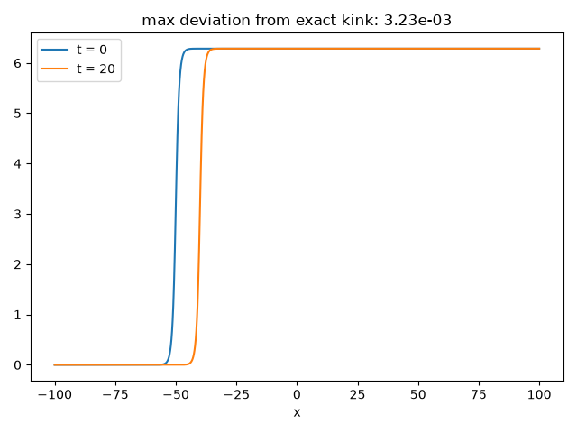

Note
Go to the end to download the full example code.
A topologically protected Sine-Gordon kink#
Yakov Frenkel and Tatiana Kontorova modeled a crystal dislocation as a chain of atoms in a periodic substrate potential – a chain of coupled pendula; in the continuum limit this becomes the Sine-Gordon equation
Its kink solution,
a single \(2\pi\) twist propagating at speed \(v<1\) along the
chain, is a topological soliton: no local, continuous deformation can
untwist it. sine_gordon_kink() builds
this exact traveling-wave solution and
sine_gordon_evolve() propagates it
with independent leapfrog finite differences, confirming the twist
survives intact; the same run can be watched frame by frame with
sine_gordon_evolve_frames().
import matplotlib.pyplot as plt
import numpy as np
from physicskit.fields import animate_field_1d, plot_field_1d, sine_gordon_evolve, sine_gordon_evolve_frames, sine_gordon_kink
A kink launched at v = 0.5 (natural units, linear wave speed = 1)#
Propagate with leapfrog finite differences on the discrete chain#
The \(2\pi\) twist survives intact, at the position predicted by the exact kink solution – it cannot be untwisted by the local dynamics, only shifted.
expected = sine_gordon_kink(x, steps * dt, v, x0)
max_dev = np.max(np.abs(u - expected))
fig, ax = plot_field_1d(x, u0, label="t = 0")
plot_field_1d(x, u, ax=ax, label=f"t = {steps * dt:.0f}")
ax.set_title(f"max deviation from exact kink: {max_dev:.2e}")
fig.tight_layout()
print(f"field before the kink (x -> -L/2): {u[0]:.4f} (expect 0)")
print(f"field after the kink (x -> +L/2): {u[-1]:.4f} (expect 2*pi = {2 * np.pi:.4f})")
print(f"max deviation from exact traveling kink: {max_dev:.2e}")

field before the kink (x -> -L/2): 0.0000 (expect 0)
field after the kink (x -> +L/2): 6.2832 (expect 2*pi = 6.2832)
max deviation from exact traveling kink: 3.23e-03
Animating the traveling kink#
sine_gordon_evolve_frames() records
the same leapfrog propagation as a sequence of snapshots, so the
topologically protected twist can be watched traveling down the chain
rather than compared only at the start and end.
To save the animation to a file instead of (or in addition to) displaying it interactively, use e.g.:
anim.save("sine_gordon_kink.gif", writer="pillow", fps=20)
Total running time of the script: (0 minutes 1.551 seconds)